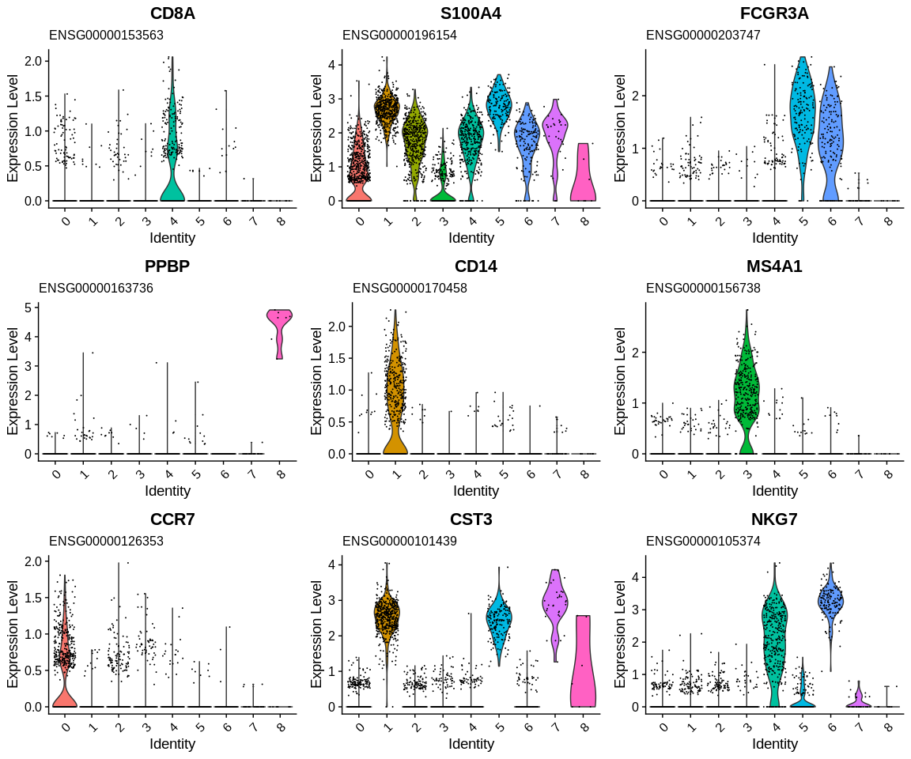
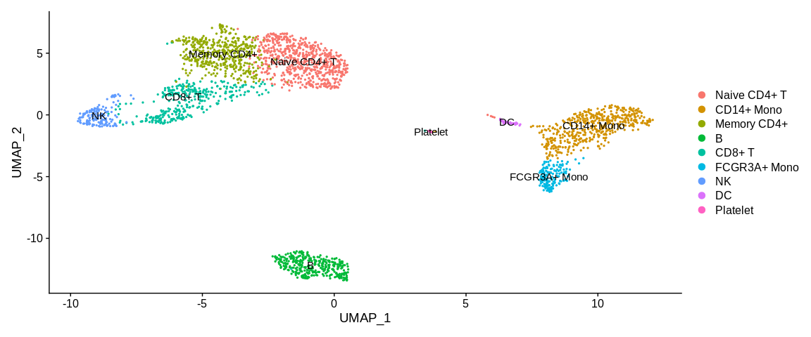

Cluster Annotation¶
We start to have a more precise idea of the identity of our clusters! We are going to use Seurat's tutorial which gives us directly the markers of the cell populations that allow us to identify the clusters. This will allow us to confirm or not the different results obtained previously and potentially help us to differentiate certain clusters between them:
kable(data.frame(Marker = c("IL7R, CCR7", "CD14, LYZ", "IL7R, S100A4", "MS4A1", "CD8A", "FCGR3A, MS4A7", "GNLY, NKG7", "FCER1A, CST3", "PPBP"),
CellType = c("Naive CD4+ T", "CD14+ Mono", "Memory CD4+", "B cells", "CD8+ T", "FCGR3A+ Mono", "NK", "DC", "Platelet"),
Cluster = 0:8), caption = "Identification of clusters based on specific cell types")
| Marker | CellType | Cluster |
|---|---|---|
| IL7R, CCR7 | Naive CD4+ T | 0 |
| CD14, LYZ | CD14+ Mono | 1 |
| IL7R, S100A4 | Memory CD4+ | 2 |
| MS4A1 | B cells | 3 |
| CD8A | CD8+ T | 4 |
| FCGR3A, MS4A7 | FCGR3A+ Mono | 5 |
| GNLY, NKG7 | NK | 6 |
| FCER1A, CST3 | DC | 7 |
| PPBP | Platelet | 8 |
Identification of clusters based on specific cell types
## Retrieve specific markers based on their gene name
markers_pop <- subset(annotated_hg19,
subset = external_gene_name %in%
c("CCR7", #Naive CD4+ T
"CD14", #CD14+ Mono
"S100A4", #Memory CD4+
"MS4A1", #B
"CD8A", #CD8+ T
"FCGR3A", #FCGR3A+ Mono
"NKG7", #NK
"CST3", #DC
"PPBP")) #Platelet
## Generate violin plots and stock them into variable
vln_plots <- VlnPlot(pbmc_small, #SeuratObject
features = markers_pop$ensembl_gene_id, #Vector of genes to plot
combine = FALSE) #Return list of plot objets instead of a combined plot (easier to process)
## Add gene name as title
vln_plots <- lapply(vln_plots, #List of plots
add_title_gene_name, #Function to apply to the list
gene_format = annotated_hg19) #Fill in the dataframe parameter
## Remove unecessary legend
vln_plots <- lapply(vln_plots, function(plot){
plot <- plot + theme(legend.position = "none")
return(plot)
})
## Plot list of plots
grid.arrange(grobs = vln_plots)

So we have managed to identify a large part of the clusters with the enrichment analyses. Now that we know which cluster is which cell type we will rename the cell identities in the Seurat object.
To do this we will use the RenameIdents function where it is provided
with a mapping from the old active identities (cluster number:
0, 1, 2,...) to the new identities (names of the different cell types)
via a named vector.
## Vector of new cluster labels #Correspond to cluster :
new_cluster_ids <- c("Naive CD4+ T", #0
"CD14+ Mono", #1
"Memory CD4+", #2
"B", #3
"CD8+ T", #4
"FCGR3A+ Mono", #5
"NK", #6
"DC", #7
"Platelet") #8
## Create a named vector with the actual cell identifiers
names(new_cluster_ids) <- levels(pbmc_small)
## Renamed cell identities in the Seurat Object
pbmc_small <- RenameIdents(pbmc_small, new_cluster_ids)
## Plot
UMAPPlot(pbmc_small,
label = TRUE,
pt.size = 0.5)
